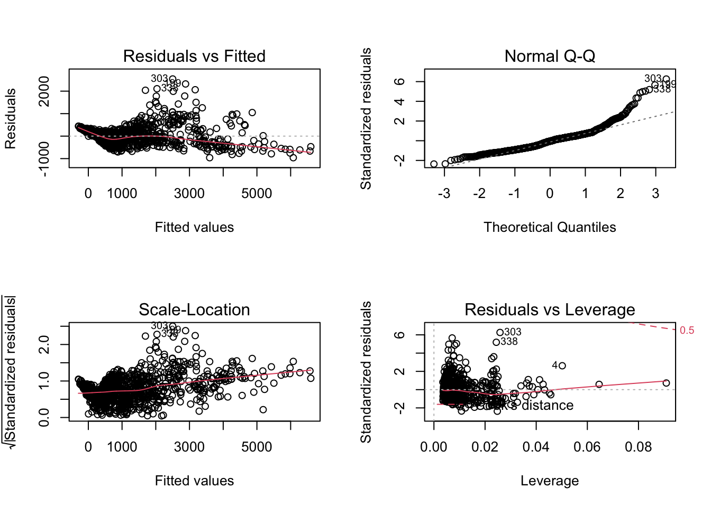

Here is the regression analysis of shooting incidence.
The goal of this section was to find whether there is any relationship between the number of COVID-19 case with the number of shooting case within different borough. We combined our data resources and examine the following candidate predictors for the outcome of COVID-19 case rate: the number of shooting case, the number of shooting case and Covid cases in different borough.
Import the data set
library(tidyverse)
library(rvest)
library(knitr)
library(leaflet)
library(rgdal)
library(lubridate)
library(plotly)
library(modelr)
theme_set(theme_minimal() + theme(legend.position = "bottom"))
options(
ggplot2.continuous.colour = "viridis",
ggplot2.continuous.fill = "viridis"
)
scale_colour_discrete = scale_colour_viridis_d
scale_fill_discrete = scale_fill_viridis_d
shooting_initial =
read_csv("./data/NYPD_Shooting.csv") %>%
janitor::clean_names()
shooting_2021 = read_csv("./data/NYPD_shooting_New.csv") %>%
janitor::clean_names()
covid_counts = read.csv("./data/COVID19_data.csv", sep = ";") %>%
as_tibble()#Cleaning NYPD shooting data:
#A variable name in shooting_new is different from the initial data, change column name in order to merge the data frames
shooting_2021 = shooting_2021 %>%
rename(lon_lat = new_georeferenced_column)
shooting = rbind(shooting_initial, shooting_2021)
shooting = shooting %>%
mutate(boro = as.factor(boro)) %>%
mutate(location_desc = replace_na(location_desc, "NONE")) %>%
mutate(location_desc = as.factor(location_desc)) %>%
separate(occur_date, into = c("month", "day", "year")) %>%
mutate(month = as.numeric(month)) %>%
arrange(year, month) %>%
mutate(year = as.character(year)) %>%
mutate(boro = tolower(boro)) %>%
mutate(boro = if_else(boro == "staten island", "staten_island", boro)) %>%
rename(borough = boro) %>%
mutate(date = str_c(month, day, year, sep = "/")) %>%
select(incident_key, date, everything())#Cleaning COVID-19 data:
clean_covid = covid_counts %>%
janitor::clean_names() %>%
rename(date = date_of_interest) %>%
select(date, contains("case_count")) %>%
select(-contains(c("probable_case_count", "case_count_7day_avg", "all_case_count_7day_avg"))) %>%
separate(date, into = c("month", "day", "year")) %>%
mutate_all(as.character) %>%
mutate_if(is.character, gsub, pattern = ",", replacement = "") %>%
mutate_if(is.character, as.numeric) %>%
pivot_longer(
cols = bx_case_count:si_case_count,
names_to = "borough",
values_to = "borough_case_count"
) %>%
mutate(borough = gsub("_case_count", "", borough)) %>%
mutate(borough = recode(borough, "bx" = "bronx","bk" = "brooklyn","mn" = "manhattan","si" = "staten_island","qn" = "queens")) %>%
relocate(case_count, .after = borough_case_count) %>%
rename(total_case_count = case_count) %>%
mutate(date = str_c(month, day, year, sep = "/")) %>%
select(date, everything())shooting_mini =
shooting %>%
filter(year == "2020"|year == "2021") %>%
select(c("date", "incident_key", "borough"))
shooting_covid =
merge(x = shooting_mini, y = clean_covid, by = c("date", "borough")) %>%
relocate("date", "month", "day", "year", everything()) %>%
group_by(date) %>%
add_count(borough, name = "borough_n_victim") %>% # victim number equals to the count of incident_key (includind duplicate)
distinct() %>%
add_count(borough, name = "borough_n_shooting") %>% # shooting number equals to the count of distinct incident_key
select(-incident_key) %>%
distinct() %>%
add_count(date, wt = borough_n_victim, name = "total_n_victim") %>%
add_count(date, wt = borough_n_shooting, name = "total_n_shooting") %>%
mutate(
borough = recode(borough,
"bronx" = "Bronx",
"brooklyn" = "Brooklyn",
"manhattan" = "Manhattan",
"queens" = "Queens",
"staten_island" = "Staten Island")
)Fit a linear regression model for total shooting case with total COVID case as predictor.
original_lm = lm(total_case_count ~ total_n_shooting + borough + borough_case_count + borough_n_shooting + borough_n_victim, data = shooting_covid)
broom::tidy(original_lm) %>%
knitr::kable()| term | estimate | std.error | statistic | p.value |
|---|---|---|---|---|
| (Intercept) | 478.1548259 | 40.0054689 | 11.9522365 | 0.0000000 |
| total_n_shooting | -24.7036600 | 5.2755661 | -4.6826557 | 0.0000032 |
| boroughBrooklyn | -666.7442317 | 35.5886923 | -18.7347213 | 0.0000000 |
| boroughManhattan | 131.1137585 | 38.4884466 | 3.4065744 | 0.0006835 |
| boroughQueens | -481.3870213 | 39.2140066 | -12.2758948 | 0.0000000 |
| boroughStaten Island | 454.2573885 | 67.1371414 | 6.7661116 | 0.0000000 |
| borough_case_count | 3.8644461 | 0.0456028 | 84.7414634 | 0.0000000 |
| borough_n_shooting | 33.2137603 | 20.9758702 | 1.5834271 | 0.1136338 |
| borough_n_victim | -0.2836356 | 11.9414982 | -0.0237521 | 0.9810550 |
set.seed(100)
par(mfrow = c(2,2))
plot(original_lm)
According to the plot, the residuals is not equally distributed around the 0 horizontal line. The residual does not follow the normal distribution. From the Q-Q plot, the upper end of the Q-Q plot to deviate from the straight line and the lower and follows a straight line then the curve has a longer till to its right and it is right-skewed. There are few influential points outside the Cook’s distance from the residual vs leverage plot.
Use Stepwise regression to find the reduced model
step_lm = step(original_lm ,direction = "backward")FALSE Start: AIC=12409.09
FALSE total_case_count ~ total_n_shooting + borough + borough_case_count +
FALSE borough_n_shooting + borough_n_victim
FALSE
FALSE Df Sum of Sq RSS AIC
FALSE - borough_n_victim 1 95 172775448 12407
FALSE <none> 172775352 12409
FALSE - borough_n_shooting 1 424280 173199632 12410
FALSE - total_n_shooting 1 3710569 176485921 12429
FALSE - borough 4 110588216 283363568 12911
FALSE - borough_case_count 1 1215200568 1387975920 14553
FALSE
FALSE Step: AIC=12407.09
FALSE total_case_count ~ total_n_shooting + borough + borough_case_count +
FALSE borough_n_shooting
FALSE
FALSE Df Sum of Sq RSS AIC
FALSE <none> 172775448 12407
FALSE - borough_n_shooting 1 969547 173744995 12411
FALSE - total_n_shooting 1 3712700 176488147 12427
FALSE - borough 4 110770433 283545881 12909
FALSE - borough_case_count 1 1216019271 1388794719 14552broom::tidy(step_lm) %>%
knitr::kable()| term | estimate | std.error | statistic | p.value |
|---|---|---|---|---|
| (Intercept) | 478.136141 | 39.9781711 | 11.959930 | 0.0000000 |
| total_n_shooting | -24.699956 | 5.2706824 | -4.686292 | 0.0000032 |
| boroughBrooklyn | -666.685798 | 35.4861933 | -18.787188 | 0.0000000 |
| boroughManhattan | 131.140984 | 38.4525589 | 3.410462 | 0.0006739 |
| boroughQueens | -481.372234 | 39.1898880 | -12.283072 | 0.0000000 |
| boroughStaten Island | 454.285754 | 67.0936888 | 6.770916 | 0.0000000 |
| borough_case_count | 3.864474 | 0.0455655 | 84.811484 | 0.0000000 |
| borough_n_shooting | 32.836864 | 13.7117452 | 2.394798 | 0.0168088 |
Since the p-value of borough_n_shooting is greater than 0.05, hence it is insignificant.
set.seed(100)
par(mfrow = c(2,2))
plot(step_lm)According to the plot, there is nmo obvious difference between reduced model and original model. From the Residuals vs Leverage plot, we could observed that the spread of standardized residuals shouldn’t change as a function of leverage: here it appears to decrease, indicating heteroskedasticity. Secondly, points with high leverage may be influential, and there are some point outside the Cook’s distance dotted line, which would have high influence.
shooting_covid %>%
add_residuals(step_lm) %>%
add_predictions(step_lm) %>%
ggplot(aes(x = pred, y = resid)) +
geom_point(alpha = 0.5) +
xlab("Fitted Values") +
ylab("Residuals") +
ggtitle("Residuals Against Fitted Values plot") +
geom_abline(intercept = 0, slope = 0, color = "red")From the plot, we observed that it have some outliers with residuals greater than 2000. It clustered around the lower single digits of the y = 0 and looks like a nonconstant variance plot.
cross validation and the plot for RMSE
cv = crossv_mc(shooting_covid, 100) %>%
mutate(
train = map(train, as_tibble),
test = map(test, as_tibble)
) %>%
mutate(
model1 = map(train, ~lm(total_case_count ~ total_n_shooting + borough + borough_case_count +
borough_n_shooting + borough_n_victim, data = .x)),
model2 = map(train, ~lm(total_case_count ~ total_n_shooting + borough + borough_case_count +
borough_n_shooting, data = .x))) %>%
mutate(
rmse_model1 = map2_dbl(model1, test, ~rmse(model = .x, data = .y)),
rmse_model2 = map2_dbl(model2, test, ~rmse(model = .x, data = .y))
)
cv %>%
select(starts_with("rmse")) %>%
pivot_longer(
everything(),
names_to = "model",
values_to = "rmse",
names_prefix = "rmse_"
) %>%
ggplot(aes(x = model, y = rmse)) + geom_violin(fill = "orange",alpha = 0.5) +
geom_boxplot(alpha = 0.5, color = "white") According to the plot, there is no obvious different between RMSE. Model 2 have slightly lower average value of RMSE, hence would be fits a little bit better than model 1. The two models are similar since we only drop one parameter for model 2.
Model 2 seems perform a little bit better than the first model.Cross validation shows a little higher RMSE for model2 than model1. Total number of shooting, case count in Brooklyn and Queens, are negatively associate with covid-19 cases. Manhattan-borough case count and borough shooting are positively associate with covid1-19 cases.